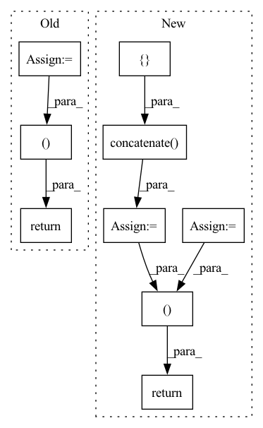

Pattern ID :1397

Before Change
img_shape = imageio.imread(img_files[0]).shape
poses[:2, 4, :] = np.array(img_shape[:2]).reshape([2, 1])
poses[2, 4, :] = poses[2, 4, :] * 1.0 / factor
imgs = [imread(file)[..., :3] / 255.0 for file in img_files]
imgs = np.stack(imgs, axis=-1)
print("Loaded camera poses, scene bounds, and image data.")
return imgs, poses, z_bounds
def imread(img_file: str) -> np.ndarray:
After Change
// Correct rotation matrix ordering and move variable dim to axis 0
// Please refer to the issue for details: https://github.com/bmild/nerf/issues/34
extrinsics = np.concatenate(
[extrinsics[:, 1:2, :], -extrinsics[:, 0:1, :], extrinsics[:, 2:, :]],
axis=1,
)
// load images
imgs = [imread(file)[..., :3] / 255.0 for file in img_files]
imgs = np.stack(imgs, axis=-1)
// swap the ordering of axes - (*, N) -> (N, *)
imgs = np.moveaxis(imgs, source=-1, destination=0).astype(np.float32)
extrinsics = np.moveaxis(extrinsics, source=-1, destination=0).astype(np.float32)
intrinsics = np.moveaxis(intrinsics, source=-1, destination=0).astype(np.float32)
z_bounds = np.moveaxis(z_bounds, source=-1, destination=0).astype(np.float32)
return imgs, extrinsics, intrinsics, z_bounds
def imread(img_file: str) -> np.ndarray:
In pattern: SUPERPATTERN
Frequency: 3
Non-data size: 9
Instances
Fragment ID: 6545187
Project Name: dvelopery0115/torch-nerf
Commit Name: 7880d3f3120e36d298df8cde8c346a8cf69a974b
Time: 2022-06-30
Author: dreamy1534@kaist.ac.kr
File Name: torch_nerf/src/utils/data/load_llff.py
M Class Name: AnonimousClass
N Class Name: AnonimousClass
M Method Name: _load_data(4)
N Method Name: _load_data(4)
M Parent Class:
N Parent Class:
M File Name: torch_nerf/src/utils/data/load_llff.py
N File Name: torch_nerf/src/utils/data/load_llff.py
M Start Line: 69
M End Line: 140
N Start Line: 69
N End Line: 170
'>
Before Change
metrics_aggregated = {}
for index, arr in enumerate(values_aggregated):
i = 0
metrics_aggregated[index] = {}
metrics_aggregated[index] = arr
print(metrics_aggregated)
return [], metrics_aggregated
def configure_evaluate(self, server_round, parameters, client_manager):
pass
After Change
length_agg_hist += val[0]
width_agg_hist += val[1]
ndarr = np.concatenate((["Length:"], length_agg_hist, ["Width:"], width_agg_hist))
return ndarrays_to_parameters(ndarr), {}
def evaluate(
self, server_round: int, parameters: Parameters
'>
Fragment ID: 6545203
Project Name: adap/flower
Commit Name: f034b6d1f41b49735bdd996afa9edd6b136f4047
Time: 2023-01-20
Author: charles@adap.com
File Name: examples/quickstart_pandas/server.py
M Class Name: FedAnalytics
N Class Name: FedAnalytics
M Method Name: aggregate_fit(4)
N Method Name: aggregate_fit(4)
M Parent Class: Strategy
N Parent Class: Strategy
M File Name: examples/quickstart_pandas/server.py
N File Name: examples/quickstart_pandas/server.py
M Start Line: 40
M End Line: 53
N Start Line: 45
N End Line: 62
'>
Before Change
model.eval()
class_num = data_loader.dataset.cls_num
conf_mat = np.zeros((class_num, class_num))
loss_sigma = []
path_error = []
for i, data in enumerate(data_loader):
inputs, labels, path_imgs = data
// inputs, labels = data
inputs, labels = inputs.to(device), labels.to(device)
outputs = model(inputs)
loss = loss_f(outputs.cpu(), labels.cpu())
// 统计混淆矩阵
_, predicted = torch.max(outputs.data, 1)
for j in range(len(labels)):
cate_i = labels[j].cpu().numpy()
pre_i = predicted[j].cpu().numpy()
conf_mat[cate_i, pre_i] += 1.
if cate_i != pre_i:
path_error.append((cate_i, pre_i, path_imgs[j])) // 记录错误样本的信息
// 统计loss
loss_sigma.append(loss.item())
acc_avg = conf_mat.trace() / conf_mat.sum()
return np.mean(loss_sigma), acc_avg, conf_mat, path_error
After Change
loss_list = []
path_error = []
loss_mean = 0
acc_batch_list = []
for i, data in enumerate(data_loader):
inputs, labels = data["image"], data["label"]
inputs, labels = inputs.to(device), labels.to(device)
outputs = model(inputs)
loss = loss_f(outputs.cpu(), labels.cpu())
loss_list.append(loss.item())
loss_mean = np.mean(loss_list)
acc_batch_list.append((1 - np.abs(outputs.cpu().detach().numpy() - labels.cpu().detach().numpy())))
ocean_acc = np.concatenate(acc_batch_list, axis=0).mean(axis=0)
acc_avg = ocean_acc.mean()
return loss_mean, ocean_acc, acc_avg
'>
Fragment ID: 6545208
Project Name: liaorongfan/deeppersonality
Commit Name: 565a883600a2f9be36416c98383ef54294da8ab1
Time: 2021-05-23
Author: 15670381505@163.com
File Name: dpcv/engine/portrait_model_trainer.py
M Class Name: ModelTrainer
N Class Name: ModelTrainer
M Method Name: valid(4)
N Method Name: valid(4)
M Parent Class: object
N Parent Class: object
M File Name: dpcv/engine/portrait_model_trainer.py
N File Name: dpcv/engine/portrait_model_trainer.py
M Start Line: 60
M End Line: 87
N Start Line: 54
N End Line: 71